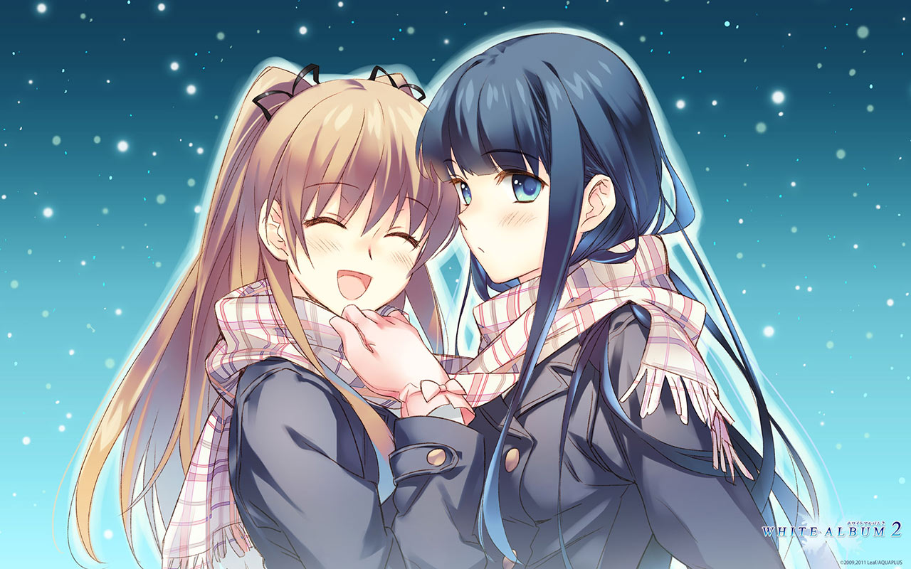
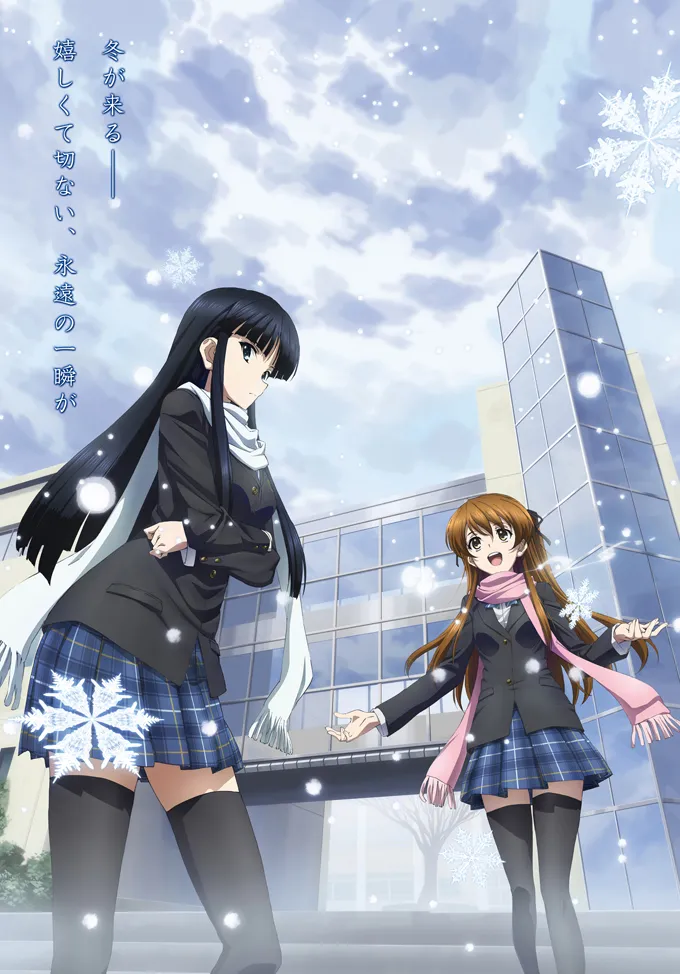
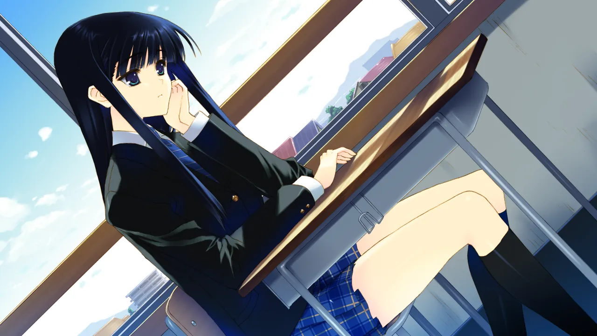
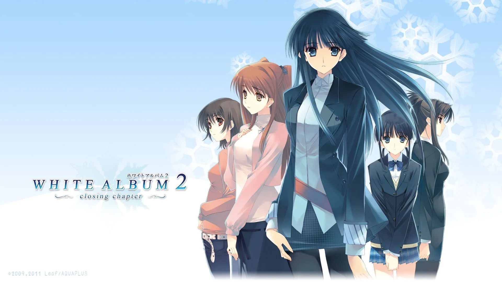
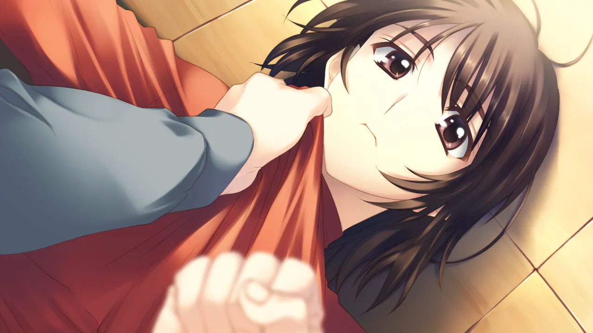
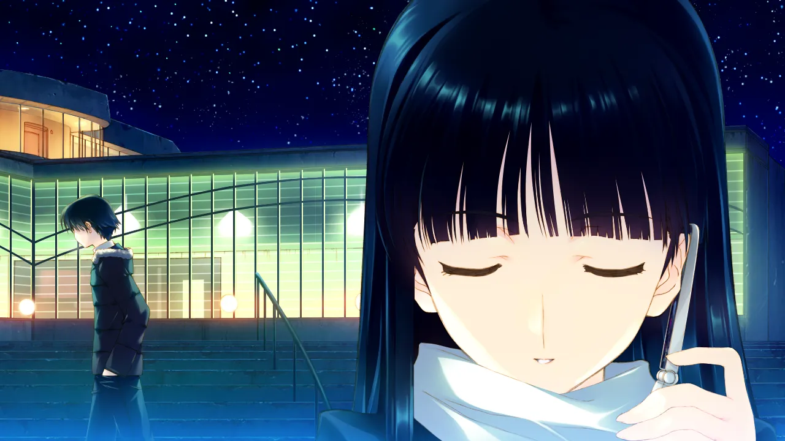
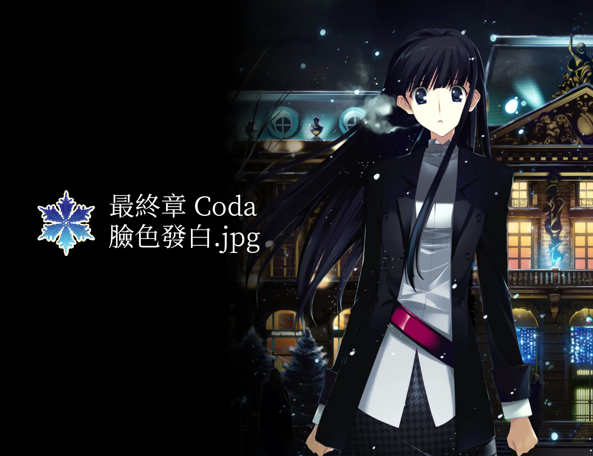
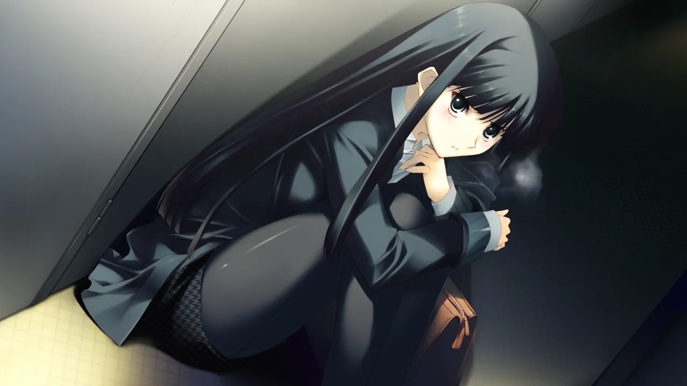
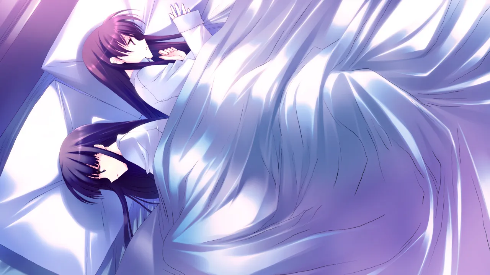

白色相簿 2：積累戀愛經驗
作者：冬馬和紗
At A Glance
奉行完美主義的高中生 北原春希，企圖完美地同時照顧兩位女生的感情，於是就被完美地捲進了長達六年的超級三角戀之中。

| 資訊一覽 | |
|---|---|
| 開發商 | AQUAPLUS |
| 章節數 | 3 |
| 總體難度 | 高 |
| 分級 | R-18（性行爲） |
您即將進入白學❄️現場。
明明是…我先來的…
第一次有了…喜歡的人…
白色相簿 2（WA2）共有三個章節，分別是：
起始之章：📖️Introductory Chapter 講述了高中時代男主角遇到兩位女主角並捲進三角戀的故事；
結局之章：📖️Closing Chapter 講述了其中一位女主角的離開，和剩下的兩人度過大學生活的故事。
最終章：📖️Coda 講述了走進社會的三人命運般地再次相聚，並且不得不做出決斷的故事。
起始之章
爲了準備文化祭上的表演，吉他手 北原春希 找到了兩位神必的女生，要和她們組成樂隊...
爲了準備文化祭上的表演，吉他手 北原春希 找到了兩位神必的女生，要和她們組成樂隊...
| 資訊一覽 | |
|---|---|
| 攻略人數 | 2 |
| 遊戲時長 | 大概 5-7H 吧 |
| 難度 | 低（不用選人） |
| 分級 | R-18（性行爲） |
這張圖是 WA2 電視動畫的海報，遊戲網站屬實過於遠古諤諤找不出好看的圖，，，
故事
男主角 北原春希 所屬的輕音樂社原本決定要在學園祭上表演，
結果社團內部發生了內訌，成員全部跑路了。。
爲了湊齊開樂隊所需要的成員，作爲學園祭執行委員的男主，
盡心盡責地踏上了獨自尋找樂隊成員之路。
（其實攤位安排、傳單印刷都是他幹，就是一背鍋俠）
他偶遇了學校校花，雪菜，她擁有着動聽的歌喉，
然後他又發現了經常在學校獨自彈琴的神必鋼琴女生，
就是自己的同桌不良少女 和紗。

陰差陽錯之間，三人組了樂隊，結下了羈絆，
在爲學園祭進行的緊鑼密鼓準備過程中，兩位女生似乎對溫柔周到的老好人男主動了心…？
登場人物
北原春希
男主角
做什麼事都認真負責的背鍋俠，
對誰都善解人意的老好人。
爲人十分成熟，做事非常老道，
面對校花和不良少女也底氣十足。
小木曾雪菜
學校的校花
雖然是校花，但是性格上是個細膩的女孩，
不喜歡引人注目，所以並不想去搞什麼 選美 表演。
但是她在面對自己愛好的時候就會顯露出活潑的另一面，
愛好是唱歌，然後這個「另一面」就被男主發現了。
冬馬和紗
同桌的不良少女
每天上課遲到，頂撞老師，
沒事幹就會跑去自己一個人彈琴。
老媽是著名鋼琴家，因此和紗具有相當的音樂素養，
在練習時化身 惡魔（魅魔？）鞭策男主。
其他人物
遊戲 OP
世界名曲 無法傳達的愛戀 通稱 屆不到的戀
Galgame 金曲 🔗️届かない恋
CG
一句話點評
讓男主博得妹子好感的，是他溫柔體貼細緻周到的性格；
最終讓三人陷入痛苦的，也是他對誰都體貼周到的性格。
因爲不想傷害到任何人，所以無法選擇其中一個然後放棄另外一個。
（要是能的話這個故事還能拍三章？一章就結束了）
不過這才是第一章，整體氣氛輕鬆愉快，上課，彈吉他，
玩樂隊，逐漸靠近的三人，快樂的三人，充滿着戀愛的青春味。
結局之章
隨着 冬馬和紗 的離開，戀情不了了之的 春希 和 雪菜 兩人踏上了大學生活。
大學裏半路殺出的女孩子 能打破這個三角戀嗎？但是擡頭不見低頭見的前女友（雪菜）似乎還…

| 資訊一覽 | |
|---|---|
| 攻略人數 | 4 |
| 遊戲時長 | 約 20H |
| 難度 | 高 |
| 分級 | R-18（性行爲） |
故事
進入大學，春希就讀了文學系，雪菜雖說也在同一所學校，但是是在不同專業。
就這樣過去了兩年。
兩年的時光能洗掉甚麼？很抱歉，甚麼也洗不掉，
春希和雪菜的關係 雖然說是前任，但是卻不是我們常人能理解的那種，
他們兩人關係實在是太好了，分手 還是 不分手，在我看來都一樣，，，
而且還有當年三人發過的誓，要永遠在一起的誓，
雖然和紗不在，但是她永遠活在兩人的心中（我猜的）。
不幸中的萬幸是，在學校、打工的地方還有各種各樣的女孩子，
春希似乎能夠擺脫三角戀的漩渦…？
登場人物
北原春希
男主角（大學）
同時打兩份工的背鍋俠，
無論是在餐廳，還是在出版社，都是深受信任的員工。
做事過於認真周到，簡直比機器人還過分。
爲人十分成熟，做事非常老道，
面對懶散的同班女生和前女友也底氣十足。
但是面對自己內心的時候就...
小木曾雪菜
大學的校花，和男主角有着微妙的關係
上了大學，由於美麗的外表和溫柔的性格有了不少朋友，
但是她卻 不唱歌了。
臉上也很少出現笑容，
這究竟是誰害的呢❓️
冬馬和紗
音容猶在 的鋼琴家
人在法國，沒有戲份。
除了彈鋼琴 啥也不幹。
杉浦小春
大學附屬中學的 學妹
因爲男主「玩弄女生感情」而跳出來找男主的麻煩。
和男主在同一餐廳打工。
性格認真又周到，就像男主一樣，
人稱 小春希。
和泉千晶
懶散無比的 同班同學
和男主角同一個班級，上課 曠課 睡覺 掛科，差點留級。
很會撒嬌，很戳男主的弱點。
似乎知道「三人組」的事情。
風岡麻理
出版社的 頂頭上司
男主打工的出版社的 編輯長。
一心工作，不問男女之事。
（在 Galgame 裏面這種高冷的大人一般都會...）
其他人物
遊戲 OP
和紗戰歌 幸せな記憶（但是這一章並沒有和紗，我很蒙古）
Galgame 金曲 🔗️幸せな記憶
CG


一句話點評
場景來到了大學，人物也變得更多，世界觀一下就宏大了起來，
短暫離開是爲了更好的相遇，本章中冬馬的缺席是爲了更大的節目效果，，，
當然除了雪菜之外的可攻略角色各有各的魅力，也各有各的悲歡離合，
甚至還有不爲人知的一面。
你猜，冬馬在 春希 和 雪菜 準備怎樣的時候 回歸，節目效果最大？
最終章
大學畢業，走進社會，修成正果的 春希 和 雪菜 兩人戀情漸入佳境，即將訂婚，但是…

| 資訊一覽 | |
|---|---|
| 攻略人數 | 2 |
| 遊戲時長 | 約 20H |
| 難度 | 非常高 |
| 分級 | R-18（性行爲） |
故事
畢業後，春希順理成章地成爲 一直在打工的出版社的 正式員工，
雪菜也就職於另一家音樂公司，兩人戀情漸入佳境，都過上了想要的生活。
春希 接到了一份工作，要前往法國 聖特拉斯堡 (Strasbourg) 採訪大鋼琴家 冬馬和紗，
作爲休閒旅行，也作爲和曾經好朋友的再會，雪菜買了稍微晚一點的機票，也跟着去了。
春希打算在 Strasbourg 的旅行中，向雪菜求婚，
但是在雪菜的飛機到達之前，街上亂逛的春希居然遭遇了 在寒風大雪中
生氣出走，渾身衣服都是破洞和傷痕的 冬馬和紗。
爲了給和紗療傷，春希翹了和 雪菜 的參加祭典的約定，把和紗帶進了酒店…
登場人物
北原春希
男主角（會社員工）
在出版社努力工作的背鍋俠，
作爲一個可靠的員工，他被分配了遠赴歐洲去
採訪鋼琴家的工作。
爲人十分成熟，做事非常老道，
同時面對現女友和前女友也底氣十足。
但是面對自己內心的時候就...
小木曾雪菜
會社員工，男主角的未婚妻
和男主角從大學畢業起就恩恩愛愛，
雪菜的家人 也都很喜歡男主角。
和春希在一起的時候，總是充滿着笑容，
但是她仍沒有忘記三人永遠是好朋友的約定...
冬馬和紗
大鋼琴家
人在法國，有一個世界級鋼琴家的老媽。
本來技術已經成熟的她，卻因爲春希的到來而亂了陣腳。
並不討厭日本，但是總是拒絕老媽前往日本表演的邀請，
也許是因爲日本就是她的傷心之地...
但是，和男主再會之後，她好像改變了主意。
她也沒有忘記三人的約定。
遊戲 OP
再放送 無法傳達的愛戀 終章 version
CG


一句話點評
最終章是本作的高潮，也是難度最大的一章。
三人組的再會給男主和雪菜的關係帶來怎樣的衝擊，不難想象。
和紗和雪菜是永遠的好朋友，男主角也是無論如何也無法傷害其中一方的人。
爲了準備冬馬的鋼琴表演，三人又聚在一起，但是這會是像高中那時一樣嗎？
在這種情況下，三人的內心都在互相顧慮着，思索着
怎麼樣才能犧牲自己，讓剩下兩個人獲得幸福。
（這甚至導致選一方的選項會加另一方的好感度）
搖擺不定的 痛苦的抉擇，會在這裏結束嗎…？
還在猶豫是否下載？
請看 序章 試玩錄像
資源
即將分別下載遊戲本體和漢化補丁。
本體
請先順序嘗試下面的下載方法，實在不行才用下一個。
- 使用網上的資源
https://www.ryuugames.com/white-album-2-extended-edition-bonus-disc-free-download/
點擊上面網站，裏面有提供多種網盤的下載方法。
解壓密碼都是 ryuugames.com
- 使用磁力連結
1 | |
- 使用備用補檔
抱歉，我們清除了這個 self-host 的盜版資源，請使用上面的下載方法。
漢化補丁
本篇漢化補丁： 🔗️前往 Telegram 頻道
複製到遊戲目錄 WHITE ALBUM 2 進行安裝。
番外篇小故事漢化補丁 🔗️前往 Telegram 頻道
攻略
這遊戲太複雜了都給我整不會了，玩不過就看攻略吧。
https://www.3dmgame.com/gl/3710683.html
情人節快樂，祝各位都 臉色發❄️，，，
对于原创内容，文章作者保留所有权利。转载需要许可，如有需要请前往 🔗️Galgame 频道 留言。
另外，复制链接自由，请随意分享。